An exclusive, invitation-only leadership gathering bringing together progressive education leaders, institutional heads, trustees, principals, vice-chancellors, directors, deans, academic leaders, policymakers, and education visionaries from across the region to engage in meaningful conversations shaping the future of education.
Ahmedabad Forum — Shaping a Brighter Future Through Education
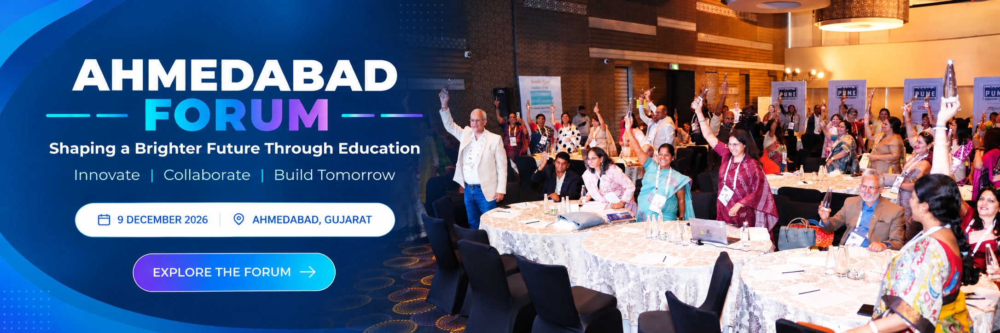
9 DECEMBER 2026
AHMEDABAD, GUJARAT
The next chapter
starts in.
00Days
:00Hours
:00Minutes
:00Seconds
09 / 12 / 2026One shared vision. A future of possibilities.
A look inside the forum
Ideas come to life
when leaders meet.
Scenes from education leaders coming together to exchange ideas and shape what comes next.
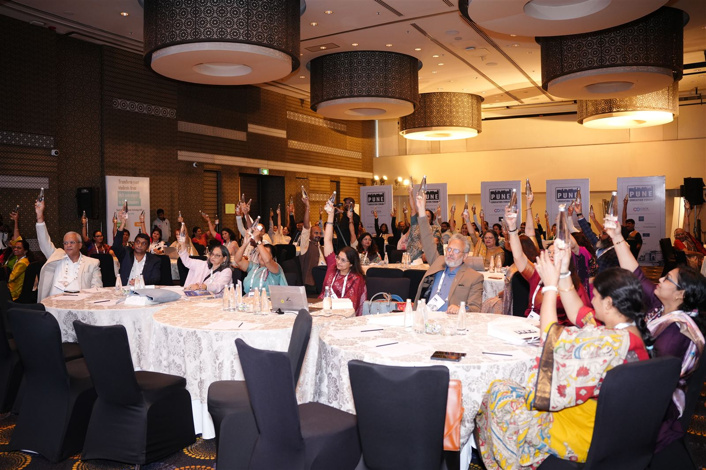
Education leaders, together
1 / 14The brief
A leadership forum built
for meaningful exchange
As education enters a period of unprecedented transformation, institutions across the K–12 and higher education sectors are navigating evolving expectations around learning, leadership, student success, technology integration, employability, research, wellbeing, faculty development, and institutional relevance.
Future-Ready Education is designed as a high-impact leadership platform where participants move beyond presentations and engage in deep, solution-oriented discussions around the most pressing challenges and opportunities facing education today.
9 Dec 2026Forum date
Ahmedabad, GujaratForum location
Invitation onlyParticipation
About the forum
A curated forum for education’s decision-makers
Ahmedabad Education Forum is a thoughtfully curated leadership conference designed for decision-makers across the education ecosystem.
Unlike conventional conferences built around one-way presentations, this forum places collaboration, problem-solving, and strategic dialogue at the centre of the experience.
Meaningful conversations. Practical pathways. Future-ready institutions.
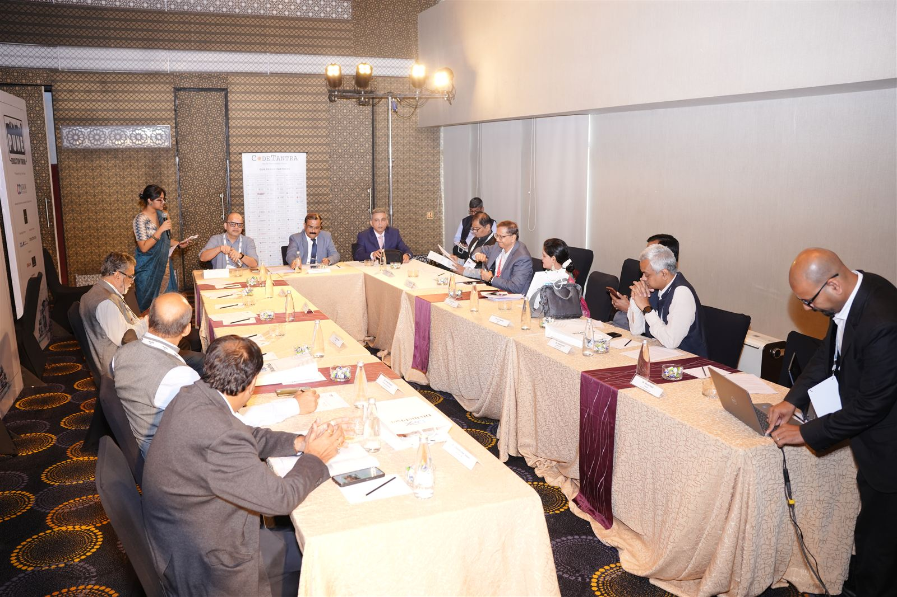
The conference brings together a distinguished community of
- School Owners and Trustees
- College and University Leadership
- Principals and Vice-Principals
- Vice-Chancellors and Registrars
- Directors and Deans
- Academic Heads
- Education Entrepreneurs
- Innovation Leaders
- Policymakers
- Thought Leaders
Built to move ideas forward
The forum aims to create meaningful conversations around the evolving realities of education.
- Encourage leadership-level collaboration
- Address real institutional challenges
- Share best practices and emerging ideas
- Explore future-focused education models
- Enable cross-learning across sectors
- Build a collective vision for the future of education
What makes this forum unique
Designed for dialogue,
built for outcomes.
Beyond presentations — into deep, solution-oriented dialogue.
Invitation-Only Leadership Gathering
A carefully curated audience of senior decision-makers and influential education leaders.
High-Impact Roundtable Conversations
Focused discussions around the most relevant educational challenges and transformation priorities.
Collaborative Problem Solving
Participants contribute insights, experiences, and practical recommendations rather than passively attending sessions.
Cross-Sector Learning
Meaningful exchange between K–12 schools, colleges, universities, and education innovators.
Regional Relevance with Global Perspective
Conversations contextualised for the regional education landscape while drawing inspiration from emerging global practices.
Action-Oriented Outcomes
The forum is designed to generate actionable insights, strategic recommendations, and future-focused takeaways for participating institutions.
Why this forum matters
Education is entering a defining phase of transformation.
Rapid technological advancement, evolving learner expectations, changing workforce demands, emerging career pathways, faculty challenges, and increasing pressure for innovation are reshaping the future of education.
Future-Ready Education creates a platform where leaders can collectively reflect, exchange ideas, and contribute towards shaping the next chapter of education.
- 01Future-ready learning models
- 02Stronger learner engagement
- 03Meaningful technology integration
- 04Improved faculty development
- 05Better wellbeing frameworks
- 06Institutional sustainability
- 07Industry and workforce alignment
- 08Human-centred educational practices
The voices shaping tomorrow
Distinguished
panellists.
Illustrative demo lineup.
Ahmedabad panellists to be announced.
01
Designed exclusively for
Who should attend
Designed exclusively for
senior educational leadership
The forum brings carefully selected decision-makers under one roof. Attendance is strictly by invitation to ensure meaningful engagement, high-quality discussions, and leadership-level networking.
- School Chairpersons
- School Owners and Trustees
- Directors and CEOs of Schools
- Principals and Vice-Principals
- Vice-Chancellors and Pro Vice-Chancellors
- Registrars
- College Directors and Deans
- University Leadership Teams
- Academic Heads
- Curriculum and Assessment Leaders
- Faculty Development Leaders
- Innovation and Transformation Leaders
- Education Policymakers
- Education Group Leadership Teams
Curated invitations
Invitations are focused on progressive institutions, particularly schools with strong academic outcomes and established fee structures — ensuring every conversation happens at a meaningful, peer-to-peer level.
Invitation only
02
An experience designed
Forum experience
An experience designed
around participation
Future-Ready Education is intentionally designed to move away from conventional conference formats.
- 01
Visionary keynote conversations
- 02
Leadership panel discussions
- 03
Structured collaborative roundtables
- 04
Peer learning opportunities
- 05
Strategic networking
- 06
Regional and institutional insights
The centrepiece of the forum is the Leadership Roundtable Experience, where participating educators engage in focused discussions around critical educational realities and collaboratively develop practical recommendations for the future of learning.
03
The Leadership
Round table experience
The Leadership
Roundtable Experience
Deep dialogue.
Shared leadership thinking.
Practical recommendations.
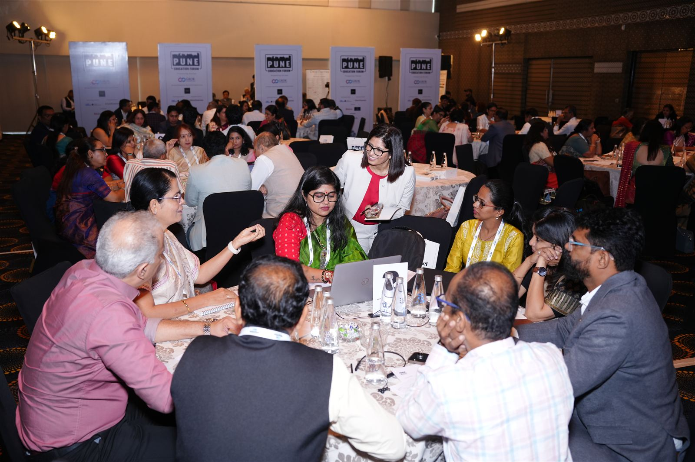
The conference will feature multiple curated leadership roundtables comprising senior education leaders from diverse institutions and regions.
Each roundtable will
- Examine a major educational challenge
- Explore institutional experiences and perspectives
- Identify opportunities for innovation and transformation
- Develop strategic recommendations
- Engage in cross-table collaborative discussions
The format encourages
- Deep dialogue
- Shared leadership thinking
- Multi-perspective problem solving
- Practical insight generation
- Peer-to-peer learning
At the conclusion of the forum, key recommendations emerging from the discussions will be consolidated into a collective leadership recommendations document.
Previous networking moments
Roundtable collaboration,
captured
Glimpses from curated leadership gatherings — focused rooms, peer-level dialogue, and decision-makers under one roof.
Key takeaways
Participants
can expect
Most importantly, participants will become part of a larger leadership conversation focused on shaping the future direction of education.
- 01Strategic insights into emerging educational realities
- 02Exposure to innovative leadership perspectives
- 03Meaningful peer interactions with senior education leaders
- 04Practical institutional ideas and recommendations
- 05New approaches toward future-ready education
- 06Collaborative learning opportunities
- 07Regional and national educational perspectives
- 08High-value professional networking
The venue
Novotel Ahmedabad
A premium setting at ISKCON Cross Roads on S.G. Highway, with convenient access across Ahmedabad. This proposed venue is subject to final event confirmation.
Proposed venue · Ahmedabad
Novotel Ahmedabad S.G. Highway
ISKCON Cross Roads, Next to Wide Angle Cinema, S.G. Highway, Ahmedabad, Gujarat 380015, India
- Nearest airport
- Sardar Vallabhbhai Patel International AirportApprox. 18 km · journey time varies with traffic
- Railway station
- Ahmedabad JunctionApprox. 12 km · journey time varies with traffic
Effortless accessibility
A location on S.G. Highway with access to Ahmedabad’s airport, railway station, and city network.
A setting built for dialogue
Conference and roundtable spaces with premium hospitality — an environment that encourages focused, distraction-free leadership conversation.
A networking environment
Elegant lounges, curated dining, and breakout spaces create natural moments for peer-level networking before, between, and after sessions.
Past partners
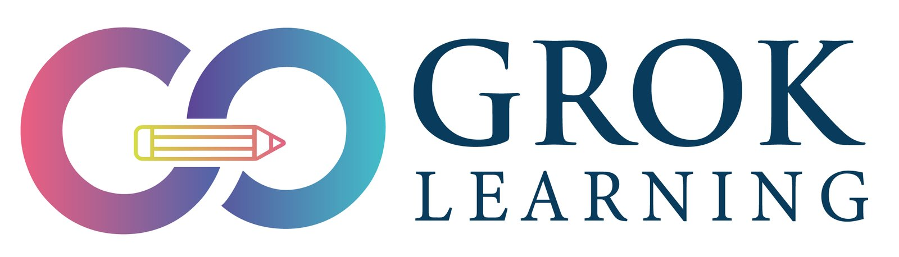
Presenting Partner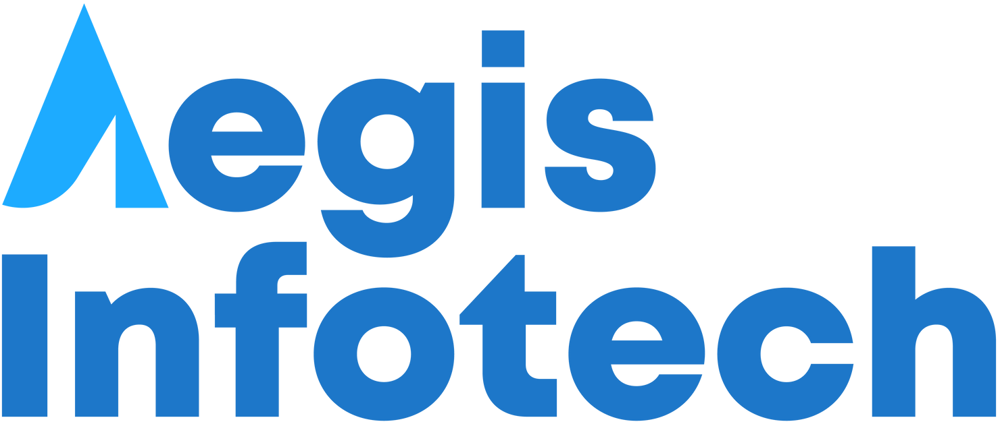
Technology Partner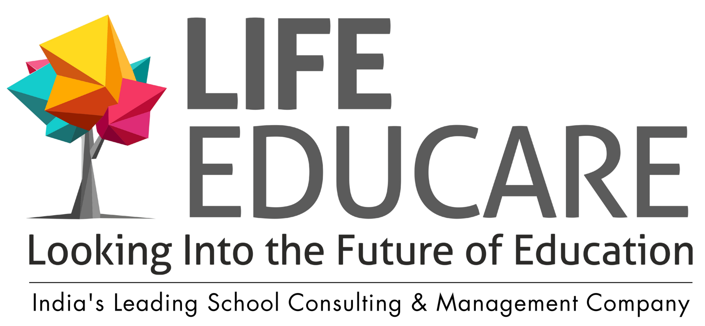
School Consulting Partner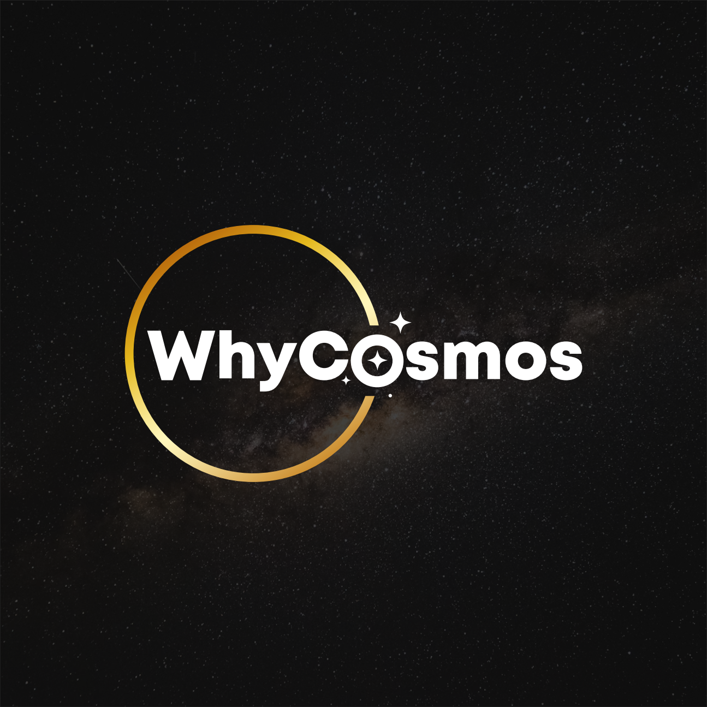
Aerospace Engineering, Aeronautics & Space Partner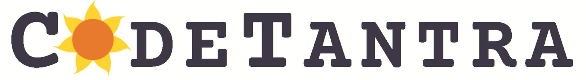
Associate Partner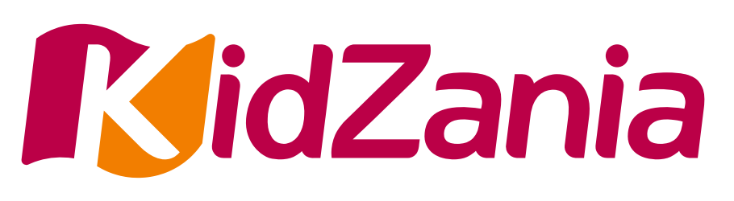
Exhibitor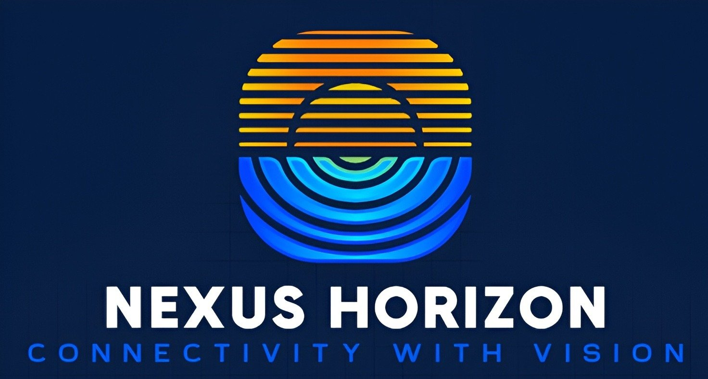
Exhibitor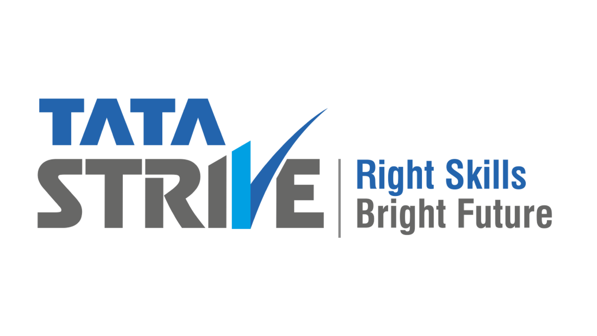
ParticipantBe part of the conversation
Join the leadership
conversation.
Seats are limited to preserve the quality of dialogue. Connect with our team or request your invitation.
Request an invitation9 December 2026
Proposed: Novotel Ahmedabad
Email the forumconnect@puneeducationforum.inInvitations, participation and event queries ↗Speak with our team+91 92171 10704Tap to call for direct assistance ↗Proposed: Novotel Ahmedabad